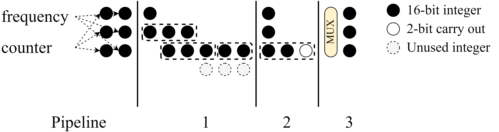

RFSoC-based TIQC Control System

True-arb waveform generation capable fully integrated TIQC control SoC. It has 3 cores: Network, Error, and Experiment Processor respectively. All cores are running in baremetal to remove unpredictable behavior of OS. Network Processor manages commands from the host server where TCP server is running with LWIP. It makes interrupt to Experiment Processor to load binary code which is transmitted from the host server or forcibly stop running program. Error Processor monitors all modules in realtime, and record error signals, or override the signal for each module.
Real-time Controller IP

In our system all IPs are connected through AXI, and it recieves microcode, it fills push to the queue, and then when timestamp specified in microcode is reached, it pops the queue and execute the microcode. We defined these specific microcode as a event, and IP is designated as a real-time controller (RTC). In other words, all IPs are encapsulized by RTC, following above register map.
DRAM based Arbitrary Waveform Generator IP

Typical AWG device lacks capacity of memory to generate true-arb waveform for TIQC, since these utilizes only BRAM. To overcome this limitation, our new AWG IP of RFSoC utilizes extermal DDR DRAM. To avoid unpredictable latency due to periodic DRAM refresh, double buffering method is utilized, where our micro-architecture schedules waveform read, and output itself.

As well known, DRAM is composed several banks, which is composed of rows, which can be accessed without additional activation command after once activated, which is called row hit, and when new activation is triggered, it is called row miss. To remove row miss when one buffer size of waveform is read from DRAM, waveform data is aligned to memory row size, and data transaction is scheduled equally.

Optimal buffer size and its latency of AWG IP is calculated theoretically considering JEDEC standard, and it is compared with the actually measured latency. 900 ns WCET latency is measured with 1 channel, and 2.16 us is measured with 8 channels.
Direct Digital Synthesis IP

Some experiments require sustained waveform generation with fixed frequency, so DDS IP is also implemented. To generate harmonic signals, with user set phase, amplitude, and frequency, parameters should pass phase accumulator, sin lookup table, and amplitude multiplier. To relieve timing constraint, it is implemented through 5-stage pipeline.
In addition, some quantum experiments require phase re-alignment in real-time, so it is necessary to calculate phase offset in real-time, which conducts 48 bit multiplication. To relieve timing constraint, it is implemented through Vedic algorihtm.
Interrupt based Flow Control
Events can be loaded from the processor and DMA method. Two cases should be handled differently to avoid stall due to queue full. Above figure shows the case of processor based microcode loading.

To prevent queue full when loading microcode from processor, RTC trigger interrupt to processor, and processor logs it to its table. When new event is should be loaded to the RTC which triggered interrupt, processor write the event to memory rather than RTC. When RTC make interrupt to processor where RTC is almost empty, processor read the events from memory and write these to the RTC with ZDMA (ZynqDMA which is internally imbedded in PS).
Non-blocking Direct Memory Access (DMA Flow Control)
When loading a large amount of events, it is necessary to load these through DMA (e.g. shuttling in TIQC). However, requesting interrupt to the processor incurs large overhead, and lowers throughput significantly.
However, when flow control is not applied to DMA, it can cause stall in the system as shown in the above figure.

To overcome this limitation, while maintaining the high throughput, we implemented non-blocking DMA method, where dedicated module sense the queue status and starts DMA transfer in block unit.

To optimize the queue size, Monte Carlo simulation is performed. Moreover, to speed up the simulation with parallization, we implemented simulation with CUDA on GPU (RTX2070). Above figure shows that 2048 depth is optimal for our case.

Host Server

User select CPP file through IQUIP GUI, and make schedule to run it on the master server. Then, master find highest priority of schedule, and compile the CPP width GNU compiler. Linker script which is written to run on ELF Runner links all user CPP object file and bsp object file. Then, master send ELF file to ELF Runner through TCP Server.
Automatic Vivado Project Generation

Generate custom IP and connect block diagram automatically based on json meta file Lolenc block diagram is generated by Vivado Project Manager, which includes almost 45 custom IPs.
Ion Trap Two Qubit Gate Pulse Shaping Optimization

Pulse shaping optimization through ADAM algorithm and analysis between experiment data and calculated data